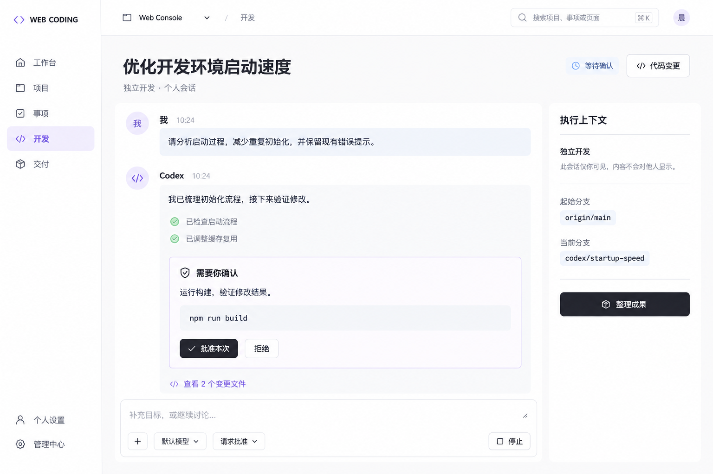

WEB CODING · DESIGN REVIEW · 2026.10.14
开发界面，三种工作方式
以图 2 为视觉方向。三套各六张，覆盖独立开发与事项开发两条入口、会话、代码和成果整理。当前是效果图评审，尚未修改生产功能。


本方案完整链路
独立开发入口已存在，需要更明确
现有全局「开发 → 独立开发」与图 1 的「手动开启」都可直接启动。三套统一命名为「独立开发」，突出“无需关联需求或 Bug”，仍保留项目、目标和起始分支。
独立开发属于一个授权项目及其 Git 仓库；准备环境与进入页面不会启动执行。
确认后清理的重点
- 常驻第二侧栏、重复项目标题和重复整理交付入口。
- 独立开发的需求／Bug 类型选择、会话中的重复进度编辑。
- 常驻 UUID、渠道同步、创建时模型等低频字段。
- 供应商重复说明与首屏展开的原始长提示词。